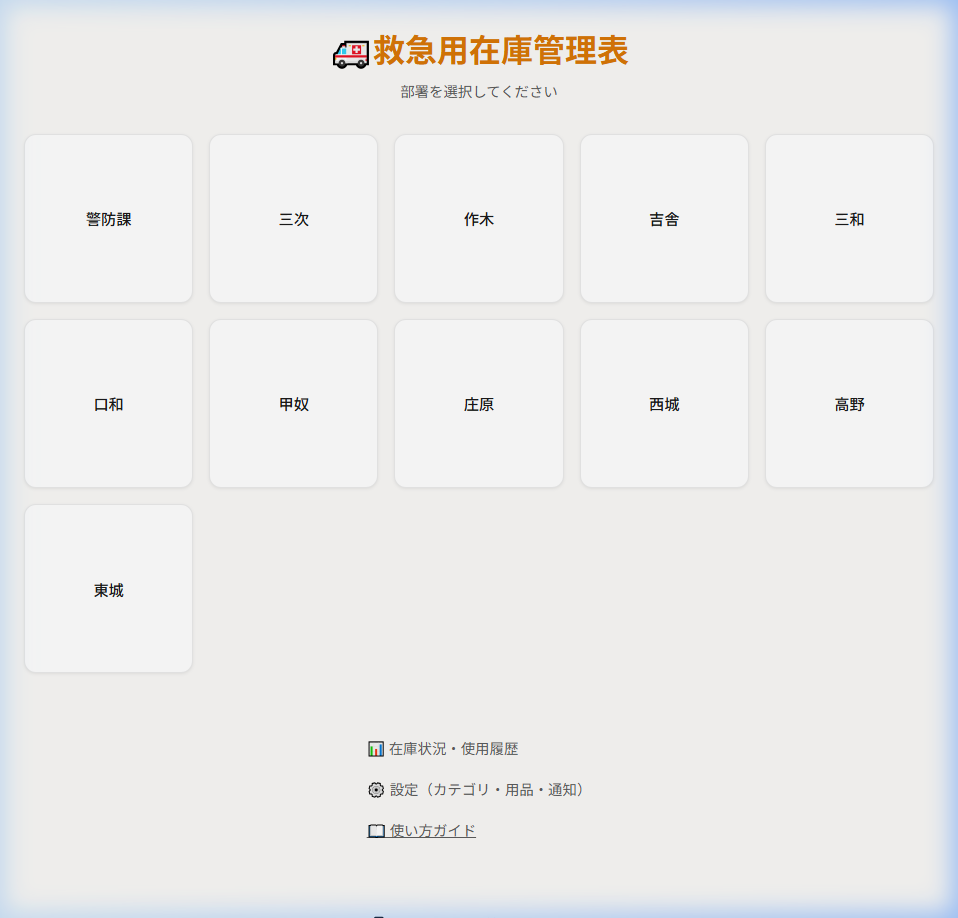
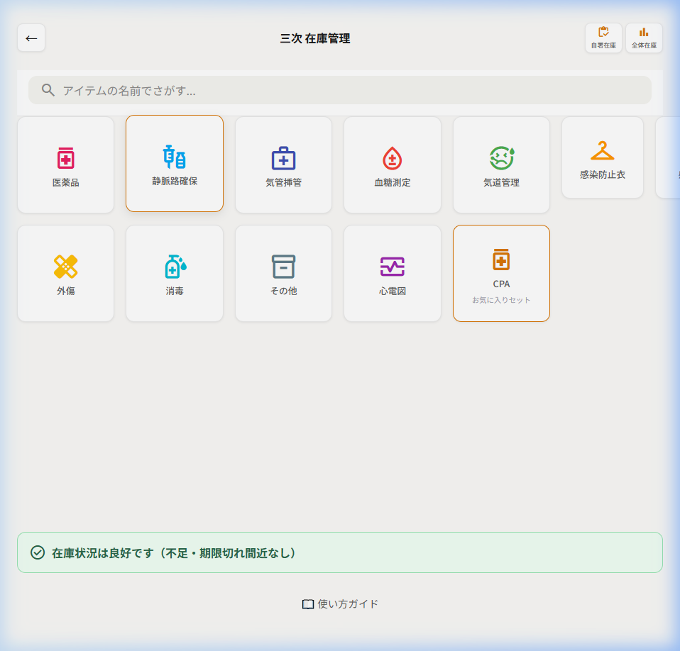
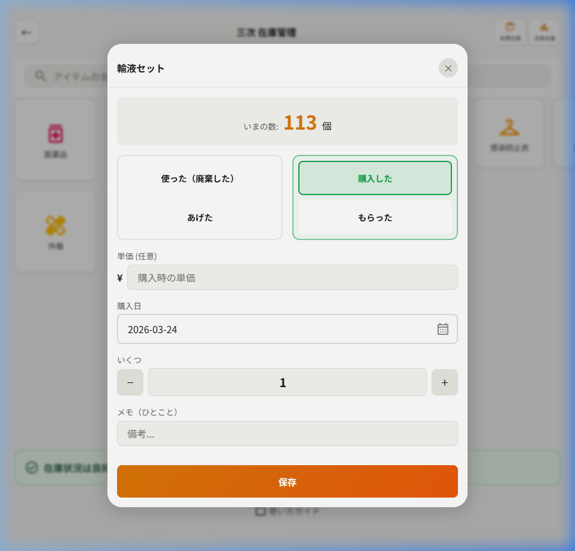
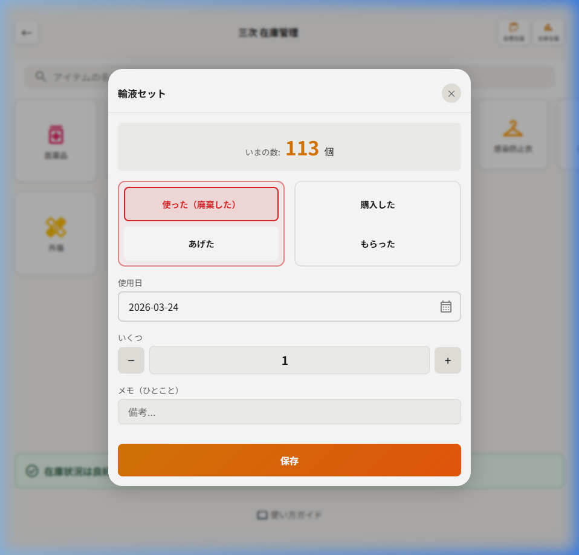
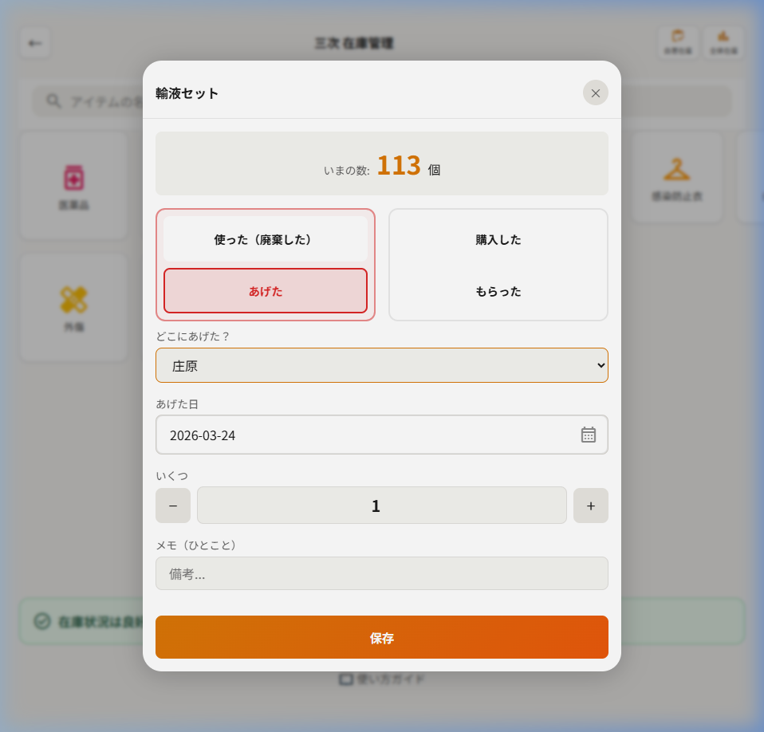
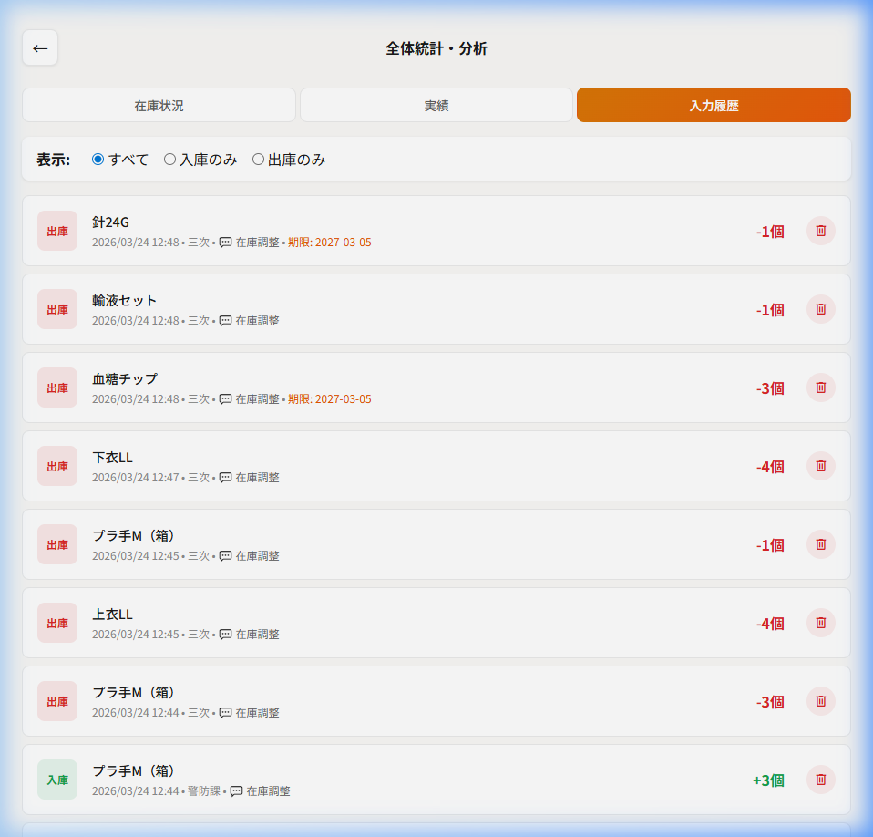

📱 アプリ版
最終更新: 2026年3月
このマニュアルでは、日々の入出庫管理から署所間の移管、履歴の修正方法までを解説します。
アプリ起動後、まずは自分の署所を選択してください。ここで選んだ署所が、その後の操作（入出庫など）の対象となります。

署所を選択すると、カテゴリ一覧（ダッシュボード）が表示されます。

カテゴリ内の用品をタップして記録画面を開き、在庫の動きを記録します。


署所間で用品を動かした際の記録です。この機能には「自動連動」が備わっています。
「あげた」または「もらった」を入力した際、相手先の署所を選択して保存すると、相手側の在庫数も自動で更新されます。
💡 ポイント：どちらか一方が入力すれば、双方が入力する必要はありません！

「間違えて入力してしまった！」という場合は、入力履歴から削除（取消）が可能です。

移管（あげた・もらった）の履歴を削除した場合、連動して相手側の在庫数も元の状態に戻ります。
「在庫状況」タブでは、全署所の在庫を一覧で俯瞰できます。足りない署所への融通や、備蓄計画の判断材料として活用してください。